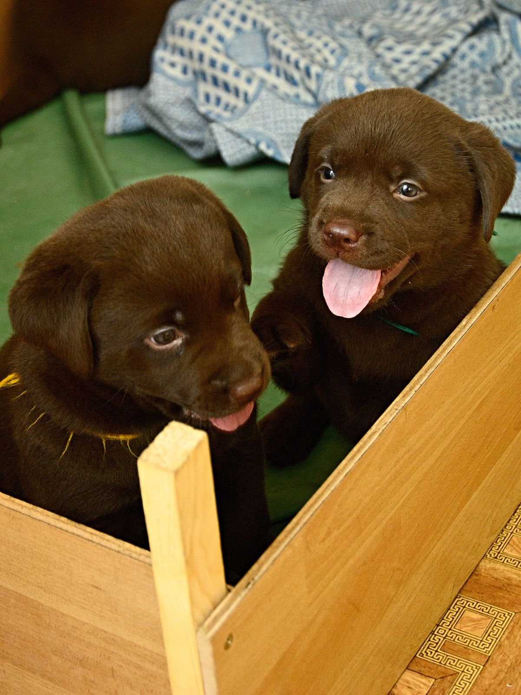
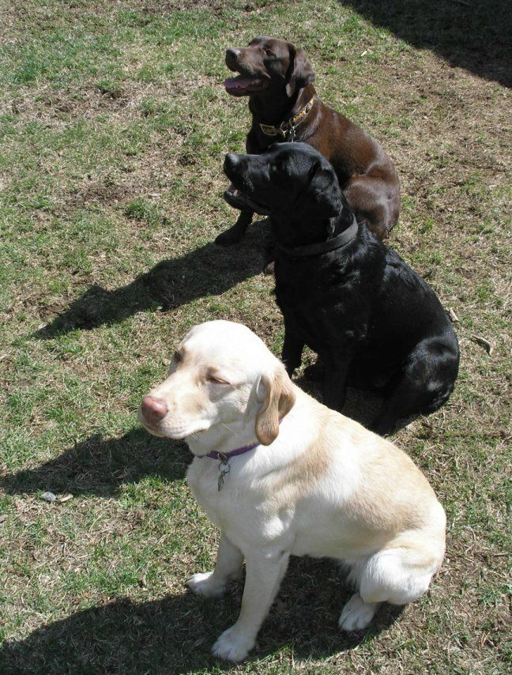

Year 9 Science · Lesson 13
Inheritance
Gametes, fertilisation and why you look like your family


Starter
Why do you look like your family, but not exactly like any one of them?
Think of one feature you share with your mother's side, and one with your father's side.
Last lesson: your 46 chromosomes come in 23 pairs. One of each pair came from your mother, one from your father. Today: how did they get to you?
Key word
Gametes: the sex cells
Gametes are sex cells: sperm from the father and an egg from the mother.
- A normal body cell has 46 chromosomes: 23 pairs.
- A gamete has only 23: one chromosome from each pair. That's half the DNA.
- To make gametes, the parent first copies its DNA, then shares it out.
Key word
Fertilisation makes a zygote
Fertilisation is when a sperm and an egg join. The new cell, the zygote, has 46 chromosomes: half from each parent.
Key words · learn these
Four words for describing inheritance
Going further
Two copies of every gene
Because you have two copies of each chromosome, you have two copies of every gene: one from each parent.
A gene can come in different versions, called alleles. The gene for eye colour has a brown allele, a blue allele and others.
Each gamete gets just one allele of each gene, and which one is down to chance. So every sperm and every egg is different.
That's why brothers and sisters look alike, but not identical. Only identical twins, who come from one zygote, share all their DNA.
Closing the loop
When copying goes wrong
Every time DNA is copied there is a small chance of a mistake. A mistake in DNA is a mutation.
- Most mutations do nothing, or cause harm.
- A few are helpful.
- A mutation in a gamete can be inherited.
Mutation → new variation → natural selection → over millions of generations, new species. That's how one common ancestor, 3.5 billion years ago, led to all life today.
Lab manual p29 to p30
Whakapapa
In te ao Māori, whakapapa connects people to their tūpuna (ancestors), to each other and to the natural world. It was passed down orally; some iwi used notched rākau whakapapa to help recall long genealogies.
Your DNA connects you to your tūpuna too. How much of it came from each?
| Ancestor | How many | Share of your DNA from each, on average |
|---|---|---|
| Parents | 2 | 50% |
| Grandparents | 4 | 25% |
| Great-grandparents | 8 | 12.5% |
Practise a "describe" answer · 5 minutes
Labrador coat colour
Labradors can be black, chocolate or yellow. Coat colour is coded for by genes and is inherited.
Describe how coat colour is passed on from parent Labradors to their puppies. Include: gametes, fertilisation and inherited traits.


Model answer
Mark your own
Coat colour is controlled by genes, sections of DNA on chromosomes in the nucleus. Each parent makes gametes: the father makes sperm and the mother makes eggs. Each gamete carries one copy of each chromosome, so one allele of the coat colour gene. At fertilisation a sperm and an egg join to make a zygote with two copies of each chromosome, one from each parent. The zygote divides to form the puppy, so every cell has the coat colour genes from both parents. That's how the trait is inherited.
Check: genes on DNA? Gametes, with one copy each? Fertilisation and zygote? One copy from each parent? A link back to coat colour?
Exit question
Why do you have features from both sides of your family?
Answer in one paragraph. Use the words gamete, fertilisation and inherited.
Away today?
Missed this lesson? Catch up here
- Learn the four key words on slide 5, and copy the fertilisation diagram on slide 4.
- Lab manual p29 to p30: complete your family tree and the percentages of DNA from each ancestor.
- Write your own answer to the Labrador question (slide 9) before you read the model answer.
- Exit question: why do you have features from both sides of your family?